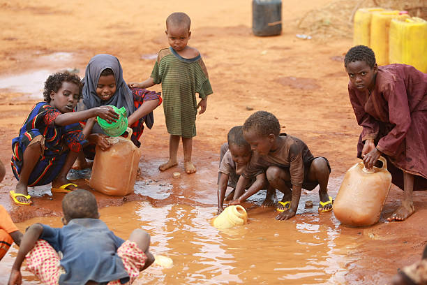

Innovative Solutions to End Hunger
Innovative Solutions to End Hunger
Hunger remains one of the world's most pressing issues, affecting millions across the globe. While traditional methods such as food donations and government aid programs play a significant role, innovative solutions leveraging technology, policy changes, and community engagement are reshaping how we tackle food insecurity. Below are some of the most promising approaches.
Agricultural Innovations and Sustainable Farming
With a growing global population, increasing food production sustainably is crucial. Some groundbreaking solutions in agriculture include:
- Vertical Farming: Maximizes food production in urban areas using minimal land and water.
- Precision Agriculture: Uses AI, drones, and IoT sensors to optimize crop yield and reduce waste.
- Genetically Modified Crops: Improves resistance to pests and extreme weather conditions, ensuring stable food supply.
- Soil Regeneration Techniques: Methods like regenerative agriculture enhance soil health and productivity.
Reducing Food Waste and Enhancing Distribution
Approximately one-third of all food produced is wasted, while millions suffer from hunger. Addressing food distribution inefficiencies can bridge this gap:
- Food Recovery Programs: Initiatives like food banks and mobile food pantries redirect surplus food to those in need.
- AI-Driven Supply Chain Optimization: Machine learning predicts demand more accurately, reducing overproduction and waste.
- Community Fridges and Food-Sharing Apps: Platforms like OLIO and Too Good To Go help distribute excess food at local levels.
- Innovative Packaging Solutions: Smart packaging extends food shelf life, reducing spoilage.
Policy, Education, and Social Initiatives
Solving global hunger requires a combination of immediate aid and long-term sustainable solutions. Strengthening agricultural practices, such as climate-resilient farming and improved irrigation, can help increase food production and protect crops from environmental challenges. Governments and organizations must also policies that support food security, including fair food distribution, economic assistance for struggling communities, and social safety nets. Reducing food waste through better storage, transportation, and consumer awareness is another crucial step in ensuring food reaches those in need. Additionally, technology plays a vital role in combating hunger by optimizing food supply chains, improving market access for farmers, and innovating new food production methods. By combining these efforts, we can work toward a world where everyone has access to sufficient and nutritious food.
